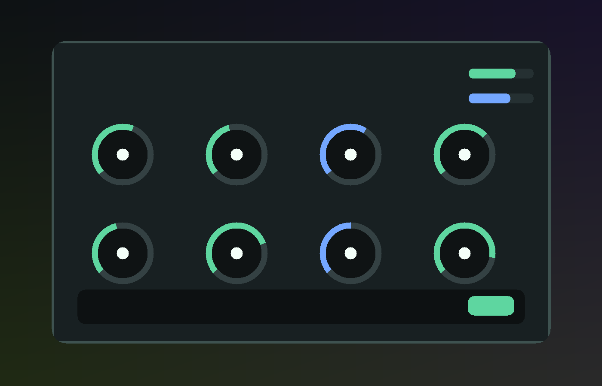

Tone
Low, mid focus, and high controls for quick corrective or creative balance.
JUCE AU / VST3 / Standalone
AI-assisted mixing controls for tone, glue, width, and level. Built as a clean, secure successor to prompt-driven mix assistant ideas.

Core
Low, mid focus, and high controls for quick corrective or creative balance.
A simple compressor amount control for tightening a track without deep setup.
Stereo width shaping for chorus, synth, vocal doubles, and mix bus experiments.
Provider API keys are saved in macOS Keychain instead of plaintext config files.
Builds
Every push builds macOS AU, VST3, and Standalone artifacts through GitHub Actions. Public releases will be packaged after the AI provider layer is wired in.
Next